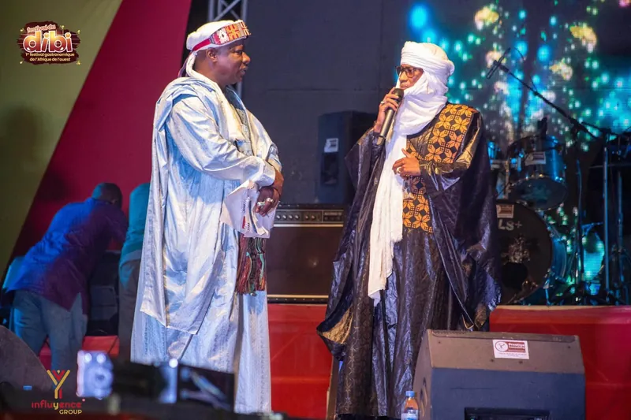
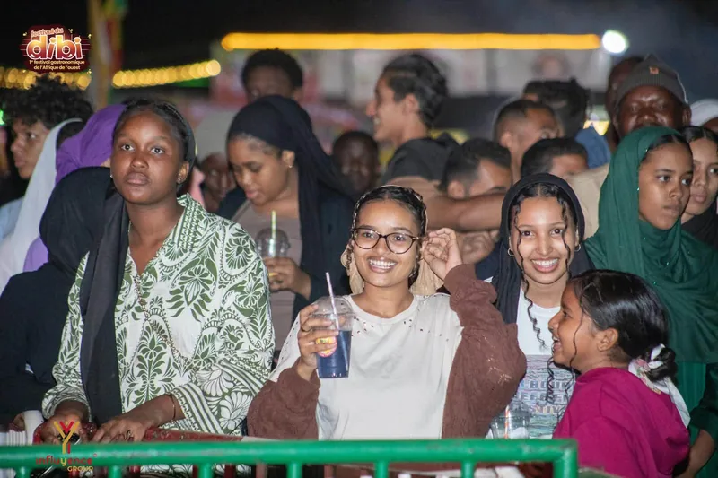
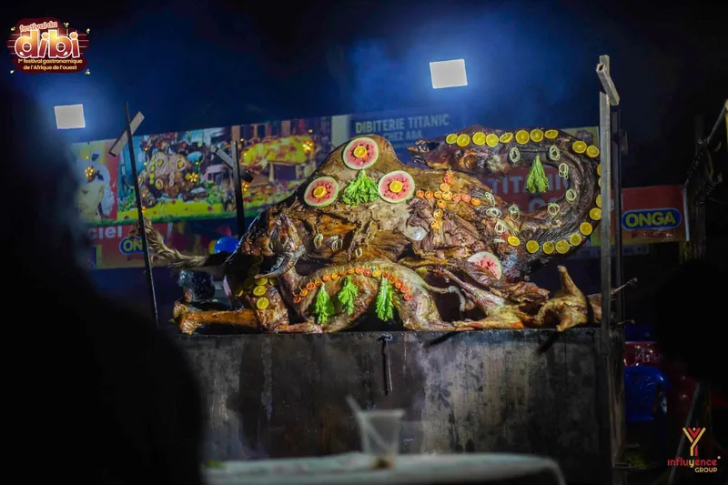

Mar. 22 déc.
Grande scène
Afrobeat
Awa Sanga
Concert90 min
Programme officiel · 12ᵉ édition
Treize nuits, trois scènes, plus de deux cents artistes. Filtrez par jour, par scène ou par genre, repérez vos concerts et gardez vos favoris — même hors connexion.
Afrobeat
Concert90 min

Mar. 22 déc. Scène DibiMandingue
Concert75 min
Wassoulou
Concert90 min

Sam. 26 déc. VillageDJ set
DJ set2 h
Afrobeat
Concert75 min
Mandingue
Concert60 min
Wassoulou
Concert60 min
Afrobeat
Concert70 min
Aucun artiste ne correspond à ces filtres. Essayez une autre combinaison.
Extrait de programmation — les huit artistes affichés et leurs horaires sont indicatifs. La programmation officielle de la 12ᵉ édition sera publiée par les organisateurs.
Les scènes
De la grande scène aux sets du village, chaque espace a son tempo. Passez de l’une à l’autre en quelques pas.
Têtes d’affiche
Les grands concerts, les cérémonies et le réveillon, face à la place entière.
20 h → 2 hTraditions & créations
Kora, ngoni, voix du Mandé et nouvelles écritures, au plus près du public.
18 h 30 → 00 h
After & rencontres
DJ sets, tables partagées et artisans : le cœur battant du festival, jusqu’au bout de la nuit.
17 h → 1 hRéservez votre pass, gardez vos favoris et retrouvez le programme même hors connexion.